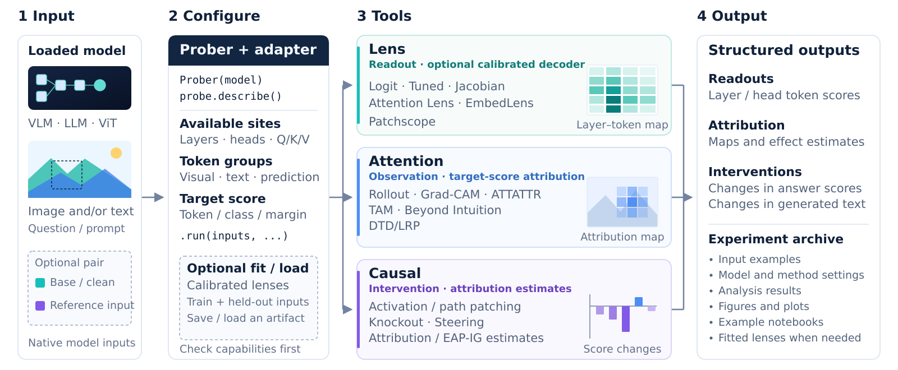

01 READOUT
Lens
What is represented inside?
Decode residual states, attention-head outputs, and projected visual embeddings into vocabulary predictions.
Lens method guidesA TOOLKIT FOR MODEL INTERPRETABILITY
Beyond the answer.
Inside the model.
Explore what vision-language models read, where they attend, and which computations change their answers.
Lens readouts · Attention explanations · Causal interventions
“Is the shirt black or yellow?”
One model binding.
Three complementary views.
VLM Probing connects observations and interventions through one interface bound to a model you already own.
Read vocabulary predictions from internal states. Compare attention patterns on the same input. Then intervene on activations or attention routes and measure what changes. Explicit adapters handle model-specific hook locations, visual-token coordinates, and readouts.
Each result keeps tensors and experiment metadata together, so the same computation can be inspected, visualized, saved, and replayed.
From internal predictions to controlled changes,
choose the view your research question needs.
What is represented inside?
Decode residual states, attention-head outputs, and projected visual embeddings into vocabulary predictions.
Lens method guidesWhere does the model look?
Compare attention flow and target-conditioned spatial attributions on the same image and question.
Attention method guidesWhich computations matter?
Patch activations, isolate paths, block attention routes, or steer residual states and measure the effect.
Causal method guidesMethod availability depends on the model adapter. Fitted lenses require compatible calibration artifacts.
A shared execution contract connects native inputs,
explicit adapters, and structured results.

Architecture-specific hooks and expanded visual-token coordinates.
Unsupported operations are distinguished from measured zero effects.
Tensors, metadata, and shared visualizations travel together.
Replay a real Attention Knockout scan.
Different routes have different effects on the same input.
Joint windows of up to 9 consecutive layers, clipped at the boundaries; all heads are blocked at masked pre-softmax attention logits. Layer indices start at zero. LLaVA-1.5-7B uses bf16 model execution and float32 probability readout.
This browser replays stored numbers; it does not run a new intervention. A single GQA example does not establish dataset-level performance.
View original measurement PRIVATEGPT-2 · shared IOI prompts
LENSLLaVA · GQA shirt questions
ATTENTIONViT-B/16 · maps & patch deletion
ATTENTIONLLaVA · fixed complete-answer score
CAUSALSmolVLM / LLaVA · residual sensitivity
CAUSALLLaVA · route & image-region scans
CAUSALQwen2.5-VL · controlled receiver replay
CAUSALLLaVA · captions & strength responses
CAUSALGPT-2 · edge scores & circuit recovery
Notebooks replay compact actual measurements by default. Rerunning models is optional and requires weights and compatible fitted artifacts where applicable.
Eight VLM families, with language and vision controls.
Check capabilities for your specific model and method.
Adapter support and pretrained validation are different scopes. Five pretrained VLMs were exercised in the technical report; some families have architecture-level validation. Qwen3.5 has restrictions across its hybrid attention stack. Fitted decoders are not supplied for every model.
Read the capability matrixInstall from the repository checkout, bind a loaded model, and inspect the methods available to it.
Read the API guideRepository, documentation, notebooks, and report links currently require repository access.
# From the repository checkout
pip install -e ".[transformers,visualization,notebooks]"
# In Python, with your loaded model and native inputs
from vlm_probing import Prober
probe = Prober(model, processor)
print(probe.describe())
result = probe.lens.logit(
layers=[0, 13, 27],
tokens="last_prompt",
).run(inputs)
result.save("outputs/logit_lens")Shared-case comparisons across five pretrained VLMs, with language and vision controls.
DOCUMENTATIONModel loading, method definitions, calibration workflows, and visualization tools.
PROVENANCEOriginal methods, author implementations, and sources used for the demonstrations.